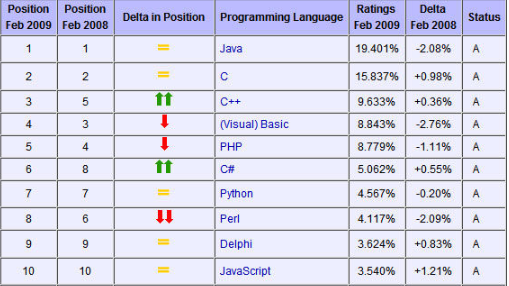
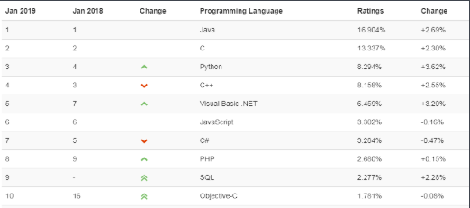

为什么学习Java？
Java的优势
在众多编程语言中，Java一直占据着主导地位，Java是目前使用率最高的一门编程语言，从2009年–2019年在世界编程语言排行榜一直名列第一，具体情况从下图可以看出：
2009年：

2019年：

因此，这也决定了Java程序员的就业机会要大于使用其他编程语言的开发者。
Java的功能比较强大，在服务器、移动设备、桌面应用和Web等领域都占据重要的地位。
Java的特点
面向对象：
Java语言提供了类、接口和继承等特性。为了简单起见，Java只支持类之间的单继承和接口之间的多继承，并且也支持类与接口之间的实现机制，总而言之，Java是一门纯粹面向对象的程序设计语言。
简单：
Java的语法和c\c++十分相似，所以大多数程序员可以很容易的学习、理解和使用。另外Java抛弃了c++中的运算符重载、多继承、自动强制类型和指针等知识。它还提供了自动垃圾收集机制，使得内存管理不需程序员考虑。
分布式：
Java支持Internet应用开发，在基本的Java应用编程接口中有一个java.net(网络应用编程接口)，这个接口提供了用于网络编程的库类，包含URL、Socket等。
健壮性:
强类型机制、异常处理、垃圾自动回收和安全检查机制等保证了Java程序的健壮性。
可移植：
Java可跨平台、跨服务器使用。
高性能：
与解释型的高级脚本语言相比，Java的确是高性能的。
多线程：
当程序需要同时处理多项任务时，就需要多线程开发。一个程序在一段时间内只能做一件事肯定是不能满足现状的，因此多线程是必要的。多线程的目的是在同一时间做多件事，并可开启多个线程做同一件事，可以提高效率。
动态：
Java语言的设计目的之一是适应动态变化的环境。Java程序中的类需要能够动态地被载入到运行环境中，特可以通过网络来载入所需要的类。动态语言的好处是有利于软件升级。
Java的与平台无关性——JVM（Java虚拟机）
对于c/c++程序员来说，最明显的一个例子就是在对基本数据类型的值域和行为的定义上。以前我们一直强调不同的平台，不同的机器，不同的CPU都有不同的字节长度定义，但是在Java中，已经不存在这种差别了，因为Java语言统一了这些。而使用Java虚拟机（JVM）是实现这一特点的关键。
一般的高级语言如果要在不同的平台上运行，至少需要编译成不同的目标代码。而引入JVM后，Java在不同平台上运行不需要重新编译。Java使用JVM屏蔽了与具体平台相关的信息，使Java语言编译程序只需生成在JVM上运行的目标代码，即字节码，就可以在多种平台上不加修改的运行。JVM在执行字节码时，把字节码解释成具体平台上的机器指令执行。